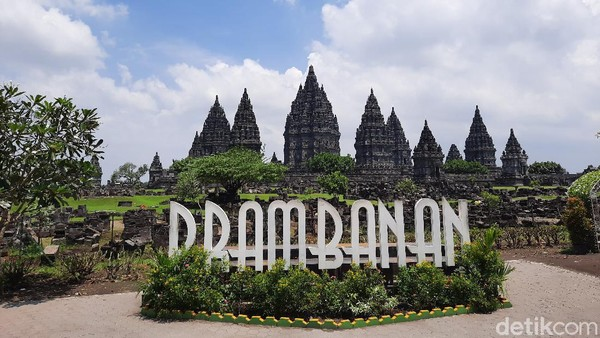

Candi Prambanan (Jawa: ꦕꦤ꧀ꦝꦶꦥꦿꦩ꧀ꦧꦤꦤ꧀, translit. Candi Prambanan) adalah bangunan candi bercorak agama Hindu terbesar di Indonesia yang dibangun pada abad ke-9 Masehi.
Nama Prambanan, berasal dari nama desa tempat candi ini berdiri, diduga merupakan perubahan nama dialek bahasa Jawa dari istilah teologi Hindu Para Brahman yang bermakna "Brahman Agung" yaitu Brahman atau realitas abadi tertinggi dan teragung yang tak dapat digambarkan, yang kerap disamakan dengan konsep Tuhan dalam agama Hindu. Pendapat lain menganggap Para Brahman mungkin merujuk kepada masa jaya candi ini yang dahulu dipenuhi oleh para brahmana. Pendapat lain mengajukan anggapan bahwa nama "Prambanan" berasal dari akar kata mban dalam Bahasa Jawa yang bermakna menanggung atau memikul tugas, merujuk kepada para dewa Hindu yang mengemban tugas menata dan menjalankan keselarasan jagat. Nama lain dari Prambanan dapat berarti 5 (lima) gunung yang dalam bahasa Khmer/Kamboja 5 (lima) adalah Pram dan banam adalah gunung (ប្រាំភ្នំ). Hal ini menggambarkan 5 puncak gunung dari Himalaya di India. Mengingat pada saat yang sama dalam kronik Khmer bahwa Bangsa Jawa pernah menjajah Khmer selama 200 tahun dan Jayawarman ke 2 yang pernah di Jawa merupakan pahlawan yang membebaskan Khmer dari dominasi Jawa. Nama asli kompleks candi Hindu ini adalah nama dari Bahasa Sanskerta; Siwagrha (Rumah Siwa) atau Siwalaya (Alam Siwa), berdasarkan Prasasti Siwagrha yang bertarikh 778 Saka (856 Masehi). Trimurti dimuliakan dalam kompleks candi ini dengan tiga candi utamanya memuliakan Brahma, Siwa, dan Wisnu. Akan tetapi Siwa Mahadewa yang menempati ruang utama di candi Siwa adalah dewa yang paling dimuliakan dalam kompleks candi ini.
| alamat | provinsi | tinggi | dibuka | tempat ibadah | telepon |
|---|---|---|---|---|---|
| l. Raya Solo - Yogyakarta No.16 | istimewa Yogyakarta | 47Meter | 856Masehi | Hindu | (0274) 089-657-67554 |